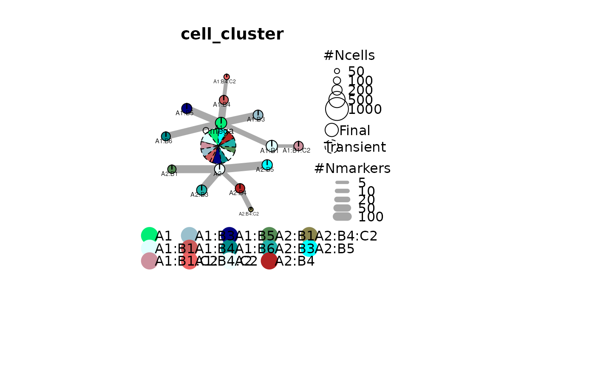

Plot Iterative Differential Clustering network
Plot Iterative Differential Clustering network
Plot Iterative Differential Clustering network
plot_cluster_network(object, ...) # S3 method for default plot_cluster_network( object, IDC_summary, color_by = "cell_cluster", cluster_col = "cell_cluster", colors = NULL, node_size_factor = 7.5, edge_size_factor = 1, threshold_to_define_feature_active = 1, max_distanceToTSS = 1000, gene_col = "Gene", function_layout = function(g) igraph::layout_as_tree(g, root = 1, circular = TRUE, flip.y = FALSE), legend = TRUE, ... ) # S3 method for Seurat plot_cluster_network( object, IDC_summary = NULL, color_by = "cell_cluster", cluster_col = "cell_cluster", colors = NULL, node_size_factor = 7.5, edge_size_factor = 1, threshold_to_define_feature_active = 2, function_layout = function(g) igraph::layout_as_tree(g, root = 1, circular = TRUE, flip.y = FALSE), assay = "RNA", legend = TRUE, ... )
Arguments
| object | A Seurat object clustered with |
|---|---|
| ... | Additional parameters passed to the plot function. |
| IDC_summary | Optional. A data.frame of differential
analyses summary outputed by |
| color_by | A character specifying the column of the Seurat to use for coloring the nodes. |
| cluster_col | A character specifying the column of the Seurat to use to store the iterative differential clusters. |
| colors | A character vector of colors. If NULL, will take R default color. |
| node_size_factor | A numeric specifying a multiplicator of the size of the nodes. |
| edge_size_factor | A numeric specifying a multiplicator of the size of the edges. |
| threshold_to_define_feature_active | If color_by is a gene, an integer specifying the threshold above which a gene is considered as active in any given cell. |
| max_distanceToTSS | If color_by is a gene, the maximum distance to TSS to consider a gene linked to a region. Used only if "color_by" is a gene name. |
| gene_col | If color_by is a gene, a character specifying the column in the rowData of the object |
| function_layout | A function of g for the layout of the graph. |
| legend | A logical indicating whether to plot the legend or not. |
| assay | If color_by is a gene, the assay in which to retrieve the counts. |
Value
A hierarchical network of cluster assignation:
Size of nodes reflects the number of cells
Width of edges reflects the number of differential features defining a cluster
Color of nodes reflects the repartition of cells according to 'color_by'
A hierarchical network of cluster assignation:
Size of nodes reflects the number of cells
Width of edges reflects the number of differential features defining a cluster
Color of nodes reflects the repartition of cells according to 'color_by'
Examples
# Plotting of Seurat scRNA object (Paired-Tag) if(requireNamespace("Seurat", quietly=TRUE)){ data("Seu", package = "IDclust") data("IDC_summary_scRNA", package = "IDclust") plot_cluster_network( object = Seu, IDC_summary = IDC_summary_scRNA, color_by = "cell_cluster", cluster_col = "cell_cluster", colors = NULL, node_size_factor = 7.5, edge_size_factor = 1, function_layout = function(g) igraph::layout_as_tree(g, root = 1, circular = TRUE, flip.y = FALSE) ) # Plotting proportion of cells activating a specific gene in Seurat scRNA # object (Paired-Tag) plot_cluster_network( object = Seu, IDC_summary = IDC_summary_scRNA, color_by = "Erbb4", # a gene contained in the Seu object threshold_to_define_feature_active = 2, assay = "RNA", cluster_col = "cell_cluster", colors = NULL, node_size_factor = 7.5, edge_size_factor = 1, function_layout = function(g) igraph::layout_as_tree(g, root = 1, circular = TRUE, flip.y = FALSE) ) }#> Erbb4 Erbb4_color #> 1 Active red #> 2 Inactive grey85 # Clustering of scExp scH3K27ac object (Paired-Tag) if(requireNamespace("ChromSCape", quietly=TRUE)){ data("scExp", package = "IDclust") data("IDC_summary_scEpigenomics", package = "IDclust") plot_cluster_network( object = scExp, IDC_summary = IDC_summary_scEpigenomics, color_by = "cell_cluster", cluster_col = "cell_cluster", colors = NULL, node_size_factor = 7.5, edge_size_factor = 1, function_layout = function(g) igraph::layout_as_tree(g, root = 1, circular = TRUE, flip.y = FALSE) ) # Plotting proportion of cells activating a specific gene in scExp scH3K27ac # object (Paired-Tag) plot_cluster_network( object = scExp, IDC_summary = IDC_summary_scEpigenomics, color_by = "Tcf4", # a gene contained in the scExp object threshold_to_define_feature_active = 1, gene_col = "Gene", max_distanceToTSS = 1000, cluster_col = "cell_cluster", colors = NULL, node_size_factor = 7.5, edge_size_factor = 1, function_layout = function(g) igraph::layout_as_tree(g, root = 1, circular = TRUE, flip.y = FALSE) ) }  #> Tcf4 Tcf4_color #> 1 Active red #> 2 Inactive grey85